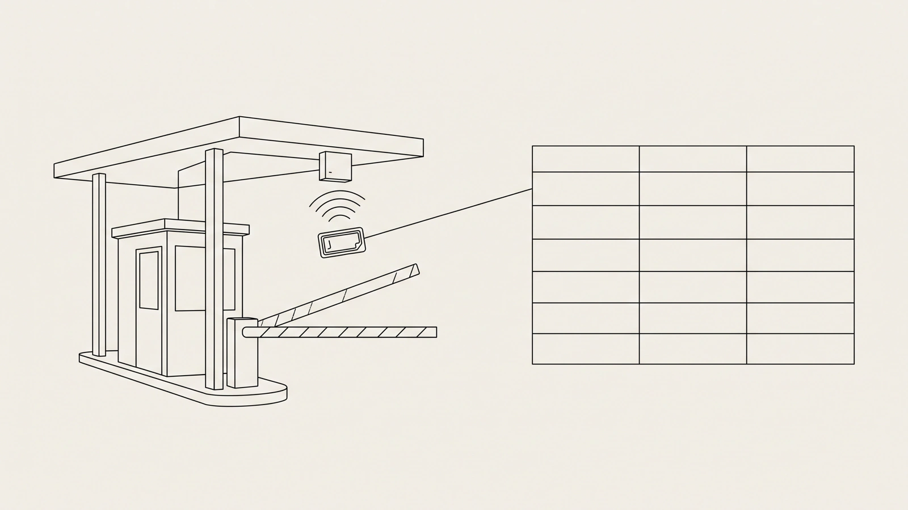

El 50% del peaje se acredita contra el ISR. Primero hay que probar que ese cruce fue tuyo.
El estímulo fiscal del 50% de peaje en autopistas es una multiplicación de un renglón. Lo caro es lo otro: el estado de cuenta del TAG llega consolidado por mes y no dice a qué viaje pertenece cada cruce.

El cálculo cabe en un renglón: el importe pagado en casetas de la Red Nacional de Autopistas de Cuota, sin IVA, por 0.5. Eso se acredita contra el ISR del mismo ejercicio. Ningún contralor de flota se traba ahí.
Se traba antes. El estímulo fiscal del 50% de peaje en autopistas no se otorga contra un total mensual: se otorga contra una bitácora de viaje que coincida con el estado de cuenta de la tarjeta con la que se pagó el cruce. Y ese estado de cuenta llega como un consolidado del mes — cómodo para contabilidad, inservible para atribuirle el gasto a un viaje.
Qué dice exactamente el estímulo
Es un acreditamiento de hasta el 50% de lo que se pagó por usar la Red Nacional de Autopistas de Cuota, aplicable contra el ISR del ejercicio en que se usó la carretera. No es una deducción adicional ni una devolución: es un crédito. Y no es automático: la ley lo condiciona al giro del contribuyente, a su tamaño y a que cumpla los requisitos que el SAT fije por reglas generales.
Los cuatro filtros de la ley, en orden de descarte
- Exclusividad. El «exclusivamente» califica al contribuyente, no al vehículo: se le pide dedicarse al transporte terrestre, no tener camiones.
- Red Nacional de Autopistas de Cuota. Una caseta estatal o municipal fuera de esa red se paga igual, pero no genera estímulo.
- Ingresos anuales menores a 300 millones de pesos en el ejercicio en que se usó la infraestructura.
- No ser parte relacionada en términos del artículo 179 de la LISR.
Ese último filtro cierra la puerta que muchos grupos intentan abrir: separar la flota en una filial para cumplir con la exclusividad deja al contribuyente justo donde la fracción V lo excluye. Conviene resolver la elegibilidad antes de invertir un minuto en la conciliación.
El CFDI del peaje casi nunca lo emite CAPUFE
Aquí empieza la parte que nadie escribe. Cuando la flota paga con TAG —y la fracción III de la regla obliga al medio electrónico si se quiere el estímulo—, el comprobante fiscal no lo expide la caseta ni el operador de la autopista: lo expide el emisor de la tarjeta. IAVE, PASE, TeleVía y los demás emisores facturan su propio servicio, mensualmente, en un solo CFDI consolidado. La interoperabilidad hace que un mismo tag cruce plazas de concesionarios distintos, así que un solo comprobante puede cubrir cruces de media república.
Lo que sí trae el estado de cuenta del TAG
- Fecha y hora del cruce, con precisión de minutos.
- Plaza de cobro y, según el emisor, el carril.
- Número de tag y clase vehicular tarifada.
- Importe cobrado por cruce y el saldo o cargo del periodo.
Lo que no trae, y es justo lo que pide la regla
- El viaje al que pertenece el cruce.
- El origen, el destino y la ruta.
- La unidad y el operador, más allá del número de tag.
- Si ese cruce se le cargó al cliente en el flete o si lo absorbió la flota.
Ese hueco es el problema entero. El emisor te vende conectividad y un CFDI; la atribución al viaje corre por tu cuenta, y es exactamente lo que el SAT pide ver.
La regla que convierte el estímulo en un problema de conciliación
Los requisitos de carácter general que la LIF anuncia viven en la Resolución Miscelánea Fiscal. Ahí el estímulo deja de ser aritmética y se vuelve expediente.
La palabra que manda es coincida. No dice «conserve el estado de cuenta»: dice que la bitácora y el estado de cuenta tienen que empatar. Eso es una conciliación viaje por viaje, no un total al cierre del mes.
| Fracción | Qué exige la regla | Qué deja en el expediente |
|---|---|---|
| I | Aviso por buzón tributario en marzo, con el inventario de vehículos usados en la red. | Padrón de unidades con modelo, serie, placa y fechas de alta y baja. |
| II | Bitácora de viaje con origen, destino y ruta que coincida con el estado de cuenta. | El cruce amarrado a un viaje, a una unidad y a una ruta. |
| III | Pagar con TAG o con otro sistema electrónico, y conservar los estados de cuenta. | Los estados de cuenta del periodo completo, por emisor. |
| IV | Aplicar el factor 0.5 al importe pagado, sin incluir el IVA. | La base sin IVA, separada del IVA que se acredita por su vía. |
Dos consecuencias para la operación diaria. La primera: la fracción III mata el efectivo. Una caseta pagada en ventanilla con billetes no genera estímulo aunque después alguien consiga una factura. La segunda: la fracción IV zanja una ambigüedad de la ley, porque el texto de la LIF habla del «gasto total erogado» —lo pagado— y la regla ordena aplicar el 0.5 al importe sin IVA. Se toma la base de la regla.
El estímulo no se pierde por calcular mal el 50%. Se pierde por no poder decir de qué viaje era cada cruce.
El método de tres columnas
La bitácora de la fracción II se arma con tres fuentes que casi nunca viven en el mismo sistema. El trabajo es ponerlas una junto a la otra y cerrar cada renglón.
Columna 1 — el estado de cuenta
- Se descarga del portal del emisor del tag, no del portal de la caseta.
- Cada renglón es un cruce: fecha, hora, plaza, tag e importe.
- Es la única columna que no se discute: es lo que se pagó y es lo que el SAT verá.
Columna 2 — el viaje
- Cada viaje tiene una ventana de tiempo, un origen y un destino.
- Un cruce cae en un viaje si su fecha y hora están dentro de esa ventana y la plaza está sobre esa ruta.
- Los dos criterios se aplican juntos; con uno solo se cierran renglones que no cierran.
Columna 3 — la unidad
- El tag está asignado a una unidad, y la unidad a un viaje.
- Ese amarre es lo que convierte «cruce en la plaza X» en «cruce de mi tracto en mi ruta».
- Sin él, la bitácora describe un gasto sin dueño.
Cerrado el cruce en las tres columnas, la bitácora se escribe sola y el 0.5 se aplica al final, sobre el subtotal ya conciliado. El orden importa: primero se prueba la pertenencia, después se multiplica.
Los dos modos de falla que ningún emisor documenta
Hecha a mano, la conciliación no falla en el total —ese siempre cuadra contra el CFDI del emisor— sino en la atribución. Hay dos formas de equivocarse y las dos sobreviven a una revisión superficial.
El cruce huérfano
Es un cruce real, cobrado, que pertenece a un viaje que nunca se liquidó: se canceló, se quedó abierto o nadie lo capturó. En el estado de cuenta se ve idéntico a los demás; en la bitácora no tiene renglón. Acreditarlo es acreditar un gasto que el expediente no amarra a ningún origen ni destino; descartarlo sin revisar es regalar estímulo legítimo. Ninguno de los dos desenlaces se detecta mirando el total.
El cruce de la unidad equivocada
Es el más caro. Un tag se cambia de unidad, se presta para un movimiento en vacío o queda asignado a una unidad que ese día iba por otra ruta. El cruce se le atribuye al viaje que estaba abierto y la bitácora queda internamente coherente, pero afirma que una unidad estuvo en una plaza por la que no pasó. Es el renglón que no aguanta un cruce contra la Carta Porte del mismo viaje — y ese cruce es exactamente el que hace una revisión.
Los dos modos de falla tienen la misma raíz: el estado de cuenta se concilia contra la memoria de alguien en vez de contra el viaje. Por eso el trabajo se hace caro sin verse caro.
Liquidar un viaje a mano cuesta alrededor de $105 MXN, en una banda de $94 a $115, y el ciclo lo tocan cinco puestos distintos. Censo propio de Likida, agosto 2026.
Qué tiene que estar listo antes de marzo
El aviso de la fracción I se presenta por buzón tributario durante marzo del año siguiente, con el inventario de los vehículos que usaron la red. Es la única fecha del calendario, y llega tarde para arreglar lo que no se registró: la bitácora se construye durante el año, cruce por cruce, o no se construye.
- El padrón de unidades con su tag asignado, y la fecha en que cada asignación cambió.
- Los estados de cuenta completos de cada emisor, mes por mes, sin huecos.
- Cada viaje con su origen, destino, ruta y ventana de tiempo.
- La lista de cruces sin viaje asignado, revisada y con motivo — no borrada.
Ese último punto es el que separa un expediente que se defiende de uno que solo se ve ordenado. Un cruce sin viaje no es un error de captura que haya que esconder: es una excepción que hay que poder explicar.
- Ley de Ingresos de la Federación para el Ejercicio Fiscal de 2026, artículo 20, apartado A, fracción V — DOF, 7 de noviembre de 2025. Texto vigente en diputados.gob.mx.
- Resolución Miscelánea Fiscal para 2026, regla 9.1.8, fracciones I a IV — DOF, 28 de diciembre de 2025. Publicación oficial en el minisitio del SAT.
- Ley del Impuesto sobre la Renta, artículo 179 — definición de partes relacionadas. Texto vigente en diputados.gob.mx.
- Censo propio de Likida, agosto 2026 — costo de liquidar un viaje a mano y puestos que tocan el ciclo.
¿Puedes decir hoy, sin abrir un Excel, a qué viaje pertenece cada cruce del último estado de cuenta de tu TAG?
 Contáctanos
Contáctanos